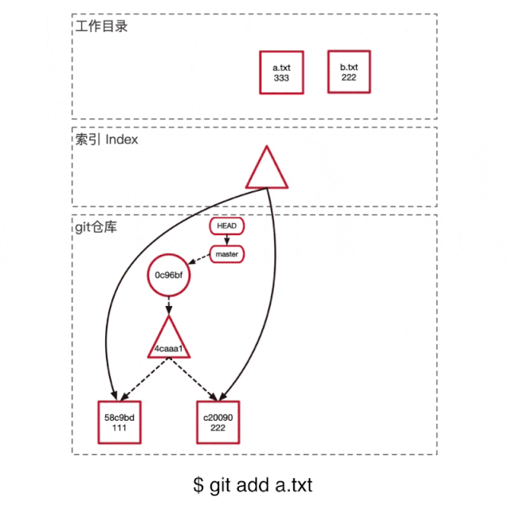
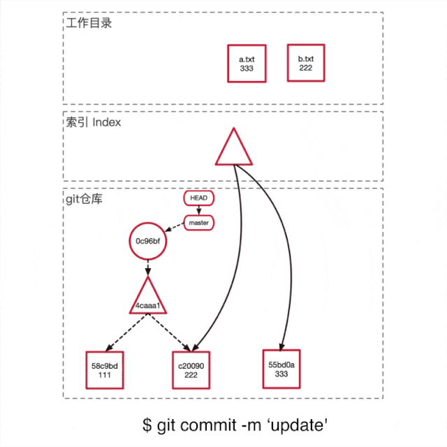
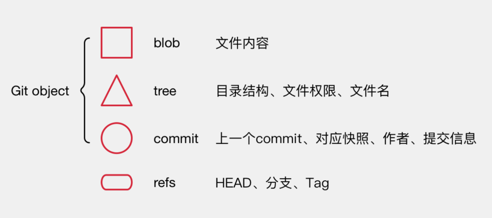

常用命令
1 | git add . //ga |
偶尔用到
1 | git push --set-upstream origin dev_2 |
很少用到
1 | git config --global user.name "muName" |
其他
比对 diff
1 | # 显示暂存区和工作区的代码差异 |
1 | # 从暂存区移除一个文件 |
rebase
为了提交好看
gitnore
1 | filename //递归 忽略当前目录下所有包含此文件名的文件 |
实现原理


所有的操作都是在操作下面这些元素

流程
git add .
- 把修改文件添加到 Git object 存储
- 把索引指向更新
git commit -m ‘update’
- 创建一个新的提交
- 将 HEAD 指向这个新的提交点